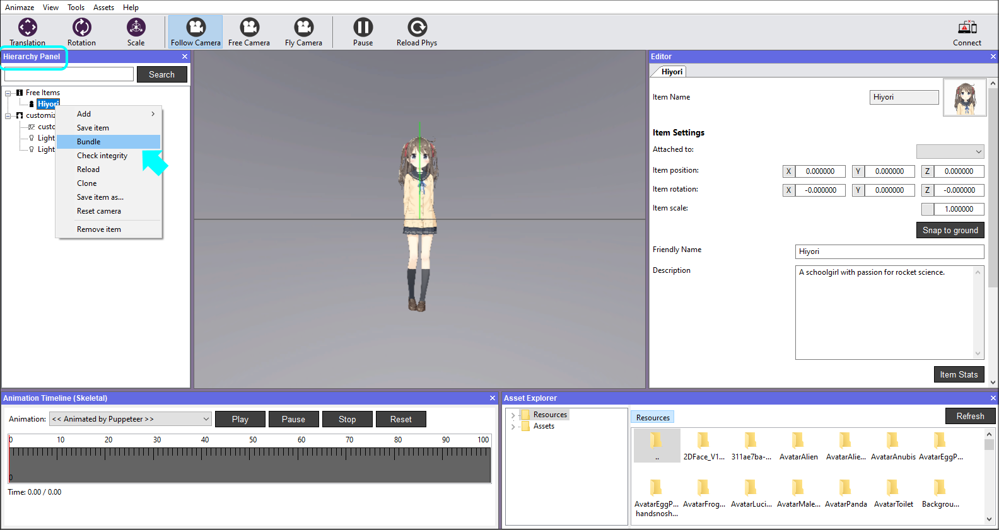
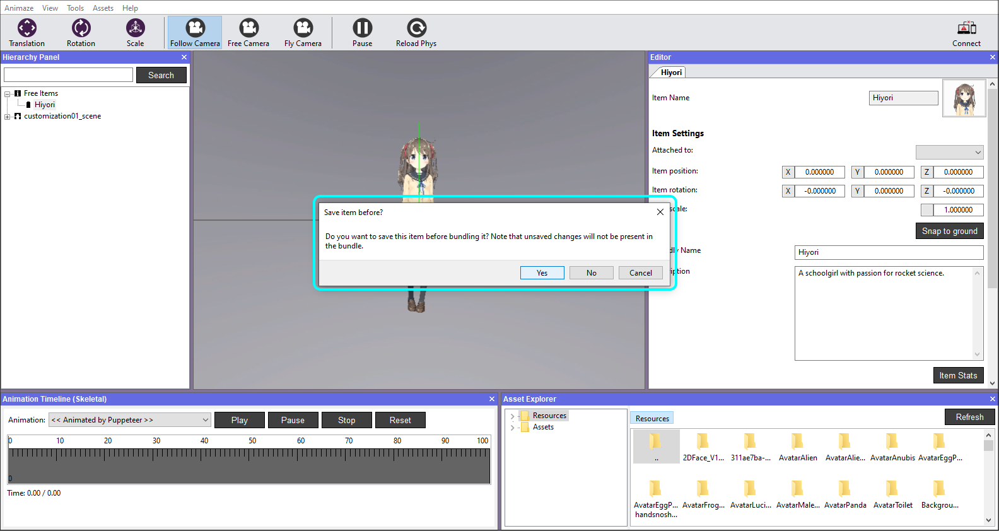
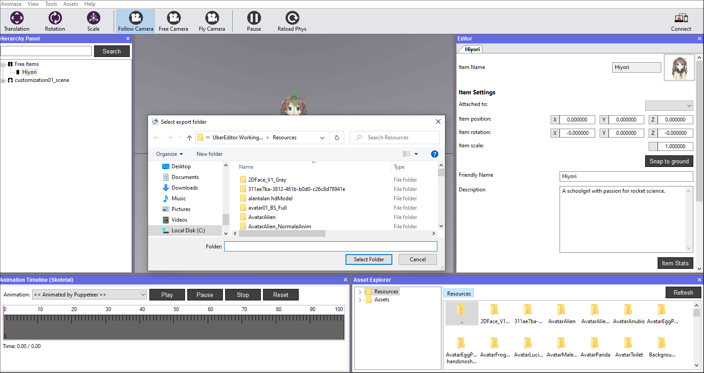
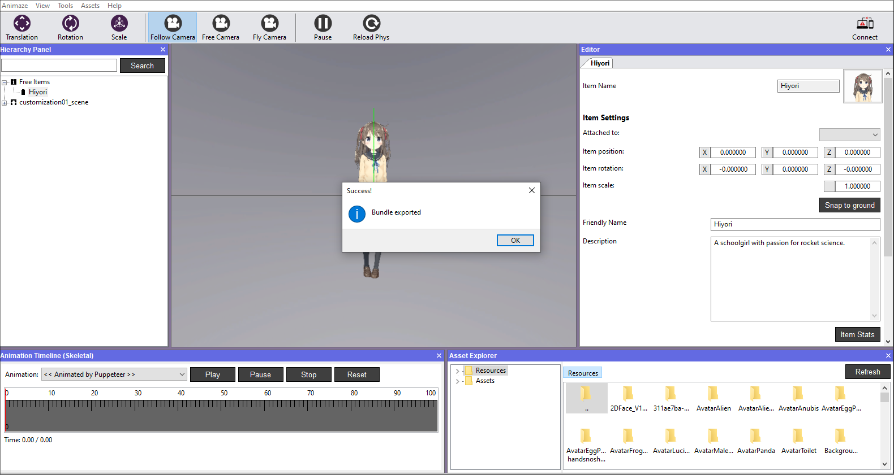

.avatarのバンドルを作成
主要なアイテムのタイプ（3D/2Dハイブリッドアバター、背景、小道具）はどれも、.avatarファイルにまとめることができ、以下の簡単なステップでAnimazeアプリ内での使用ができるようになります。具体例として3Dのテストアバターを使用します。
-
Animazeエディターを開きます
-
左側の階層パネルでアバターの名前を右クリックして、バンドルを選択します。

-
バンドル化する前にアバターに変更が加えられていた場合、新しいウインドウで変更を保存するように求められます。

-
バンドルをエクスポートしたいフォルダーを選択します。デフォルトでは、システムがエディターのリソースディレクトリをエクスポート先として指定していますが、これはいつでも変更可能です。決定したら、「フォルダーを選択」をクリックします。

-
システムがバンドル化プロセスの進行度と完了を通知します。終了したら、OKをクリックします。

こんなに簡単です。